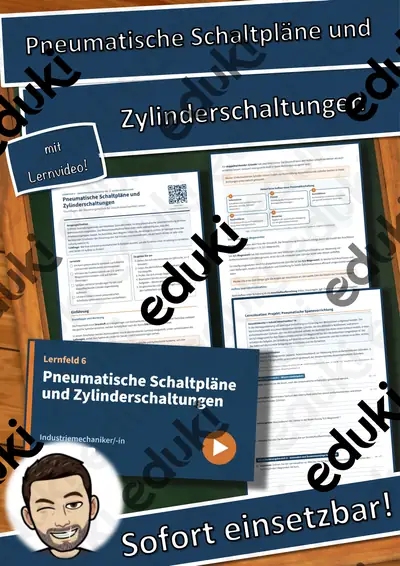
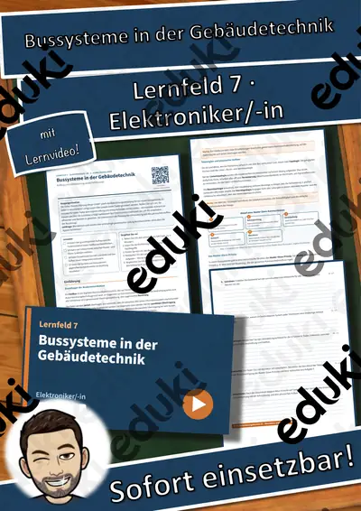
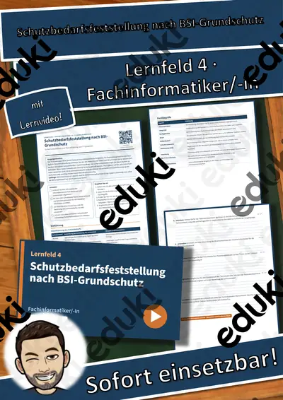
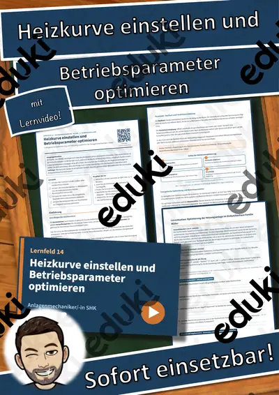
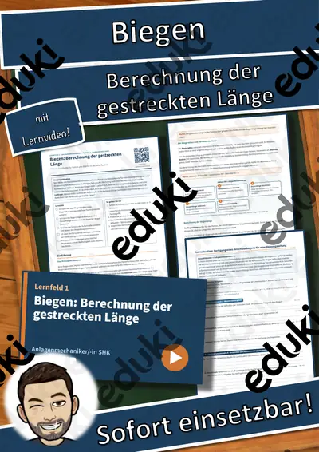
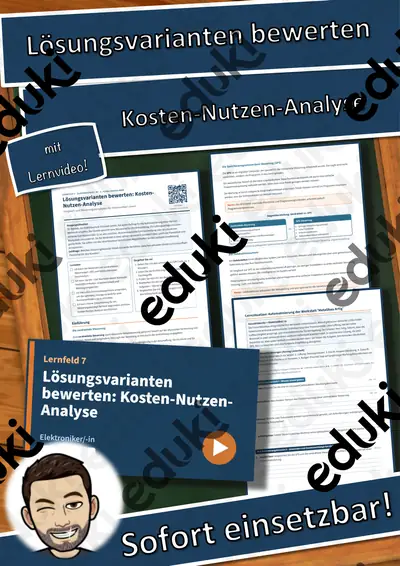

LF 6 Industriemechaniker/-in: Pneumatische Schaltpläne und Zylinderschaltungen – Übungen, Lösungen + Lernvideo

LF 7 Fachinformatiker/-in: Betriebs- und Datensicherheit in der Steuerungstechnik – Übungen, Lösungen + Lernvideo

LF 9 Anlagenmechaniker/-in SHK: Sicherheitseinrichtungen bei Trinkwassererwärmern – Übungen, Lösungen + Lernvideo

LF 6 Fachinformatiker/-in: Support-Level, Ticketbearbeitung und Dokumentation – Übungen, Lösungen + Lernvideo

Lernfeld 2 Anlagenmechaniker/-in SHK: Schnittparameter berechnen – Einführung, Übungen, Lösungen + Lernvideo

LF 3 Fachinformatiker/-in: Netzwerkpläne lesen und Komponenten auswählen – Übungen, Lösungen + Lernvideo

LF 6 Anlagenmechaniker/-in SHK: Gefälle und Fließgeschwindigkeit in Entwässerungsleitungen – Übungen, Lösungen + Lernvid

Lernfeld 7 Elektroniker/-in: Bussysteme in der Gebäudetechnik – Einführung, Übungen, Lösungen + Lernvideo

LF 4 Fachinformatiker/-in: Schutzbedarfsfeststellung nach BSI-Grundschutz – Übungen, Lösungen + Lernvideo

LF 14 Anlagenmechaniker/-in SHK: Heizkurve einstellen und Betriebsparameter optimieren – Übungen, Lösungen + Lernvideo

LF 1 Anlagenmechaniker/-in SHK: Biegen: Berechnung der gestreckten Länge – Übungen, Lösungen + Lernvideo

LF 7 Elektroniker/-in: Lösungsvarianten bewerten: Kosten-Nutzen-Analyse – Übungen, Lösungen + Lernvideo

LF 4 Elektroniker/-in: Datensicherung und Datenschutz in der Praxis – Übungen, Lösungen + Lernvideo

LF 9 Fachinformatiker/-in: Funktionsprüfung von Netzwerkdiensten – Übungen, Lösungen + Lernvideo

Lernfeld 5 Fachinformatiker/-in: Datenbankabfragen mit SQL – Einführung, Übungen, Lösungen + Lernvideo

LF 6 Elektroniker/-in: Auswahl und sicherer Einsatz von Messmitteln – Übungen, Lösungen + Lernvideo

Lernfeld 3 Elektroniker/-in: Steuerung gegenüber Regelung – Einführung, Übungen, Lösungen + Lernvideo

LF 1 Fachinformatiker/-in: Aufbauorganisation und Rechtsformen in der IT – Übungen, Lösungen + Lernvideo

LF 10 Anlagenmechaniker/-in SHK: Dichtheits- und Belastungsprüfung von Gasleitungen – Übungen, Lösungen + Lernvideo

LF 5 Elektroniker/-in: Schutzklassen und Schutzarten von Betriebsmitteln – Übungen, Lösungen + Lernvideo

LF 2 Elektroniker/-in: Leitungsdimensionierung: Strombelastbarkeit und Spannungsfall – Übungen, Lösungen + Lernvideo

LF 2 Fachinformatiker/-in: Nutzwertanalyse zur Hardware-Auswahl – Übungen, Lösungen + Lernvideo

LF 1 Kfz-Mechatroniker/-in: Betriebs- und Hilfsstoffe sowie Entsorgung – Übungen, Lösungen + Lernvideo

LF 5 Anlagenmechaniker/-in SHK: Druckverlustberechnung in Trinkwasserleitungen – Übungen, Lösungen + Lernvideo

LF 8 Elektroniker/-in: Drehzahlsteuerung von Asynchronmotoren – Übungen, Lösungen + Lernvideo

LF 1 Elektroniker/-in: Schaltpläne lesen und Stromkreise aufbauen – Übungen, Lösungen + Lernvideo

LF 4 Fachinformatiker/-in: Schutzziele der Informationssicherheit und Schadensklassen – Übungen, Lösungen + Lernvideo

Lernfeld 8 Elektroniker/-in: Anlassverfahren für Drehstrommotoren – Einführung, Übungen, Lösungen + Lernvideo

Lernfeld 5 Elektroniker/-in: Prüfung elektrischer Betriebsmittel – Einführung, Übungen, Lösungen + Lernvideo

LF 3 Elektroniker/-in: Speicherprogrammierbare Steuerungen (SPS) – Übungen, Lösungen + Lernvideo

LF 2 Elektroniker/-in: Netzsysteme TN, TT und IT sowie Schutzmaßnahmen – Übungen, Lösungen + Lernvideo

LF 9 Fachinformatiker/-in: DHCP und DNS: Funktionsweise und Konfiguration – Übungen, Lösungen + Lernvideo

LF 7 Kfz-Mechatroniker/-in: Reibung & Übersetzung: Kupplung und Bremse – Übungen, Lösungen + Lernvideo

LF 6 Elektroniker/-in: Systematische Fehlereingrenzung bei Ausfällen – Übungen, Lösungen + Lernvideo

LF 1 Elektroniker/-in: Elektrische Größen messen und berechnen – Übungen, Lösungen + Lernvideo

LF 8 Fachinformatiker/-in: Schnittstellen und Datenformate für den Datenaustausch – Übungen, Lösungen + Lernvideo

LF 9 Kfz-Mechatroniker/-in: Klimaanlagenservice: Kältemittelrückgewinnung und Dichtigkeitsprüfung – Übungen, Lösungen +

LF 4 Kfz-Mechatroniker/-in: Zubehör und Nachrüstungen fachgerecht anschließen – Übungen, Lösungen + Lernvideo

LF 10 Kfz-Mechatroniker/-in: Achsvermessung und Fahrwerksdiagnose – Übungen, Lösungen + Lernvideo

LF 4 Kfz-Mechatroniker/-in: Zulassungsrechtliche Vorgaben bei Umrüstungen prüfen – Übungen, Lösungen + Lernvideo

LF 6 Kfz-Mechatroniker/-in: Hochvolt-Sicherheit: Isolationsfehler und Freischaltung – Übungen, Lösungen + Lernvideo

LF 5 Kfz-Mechatroniker/-in: Verschleißursachen analysieren, Zusatzarbeiten planen – Übungen, Lösungen + Lernvideo

LF 3 Kfz-Mechatroniker/-in: Grundgrößen und ohmsches Gesetz im Kfz-Bordnetz – Übungen, Lösungen + Lernvideo

Technisches Zeichnen: Flache Werkstücke - Einführung + Einfache Veränderungen inkl. Lösungen (Flache Werkstücke)
Keine Materialien gefunden – versuch einen anderen Suchbegriff oder Filter.